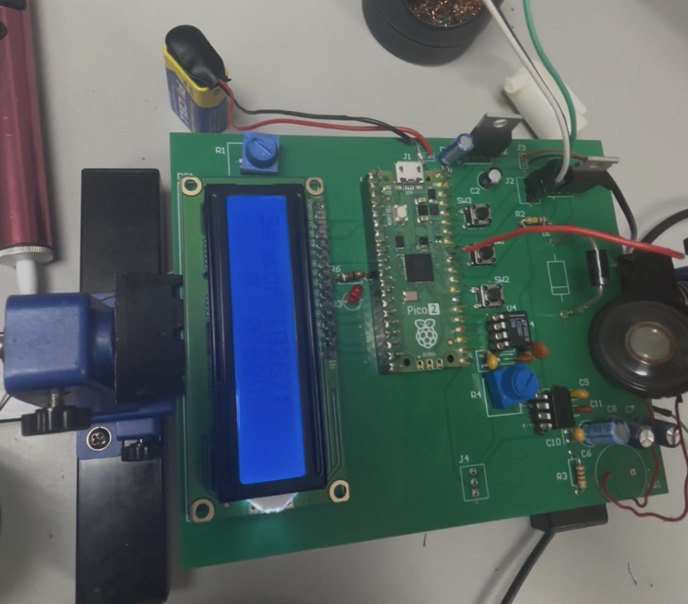

An automated plant watering system utilizing a capacitive soil moisture sensor and a custom relay board to trigger a submerged water pump. I designed the logic to prevent over-watering by implementing a delay cycle, ensuring the water has time to percolate through the soil before taking another reading.
